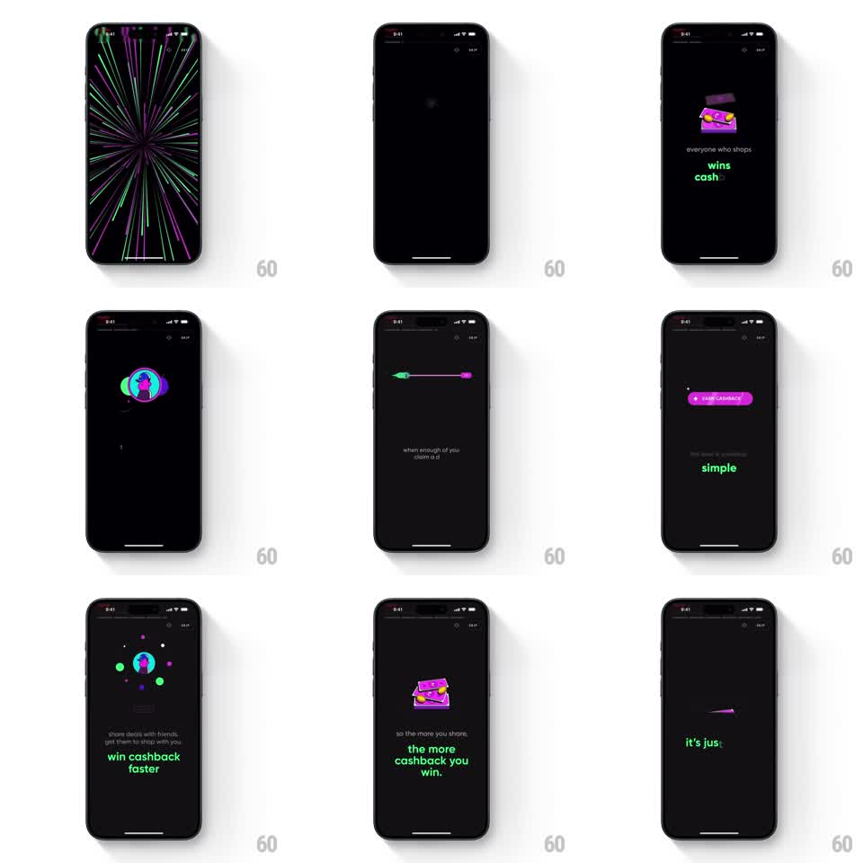

Media
Frame-by-frame

Rebuild this interaction 1:1: CRED's groupbuy explainer - a story-style sequence of black scenes with neon vector illustrations and pink/green copy ("shop together, to win cashback", "every deal levels", "the more you share, the more cashback you win") connected by warp-tunnel transitions.

Rebuild this interaction 1:1: CRED's groupbuy explainer - a story-style sequence of black scenes with neon vector illustrations and pink/green copy ("shop together, to win cashback", "every deal levels", "the more you share, the more cashback you win") connected by warp-tunnel transitions.
## Integration
Integration: stack-agnostic spec - springs given as stiffness/damping, timed motions as duration + curve; map every value to your framework and animation library of choice.
## Scene
CRED groupbuy story, black: top chrome (back arrow, progress segments, SKIP). Scenes: a sparkle with "shop together, to win cashback / here's how it works"; "every deal / levels"; a pink cashback-card stack with "everyone who shops / wins cashback"; a keyhole-globe with "to unlock a level / claim the deal with other members"; a progress bar filling; an "EARN CASHBACK" pill with "simple"; "more levels mean more cashback"; the card stack again with "the more you share, the more cashback you win."
## Motion spec
Pattern: neon story scenes linked by warp-tunnel zoom transitions.
- Auto-advance ~4s per scene (segment bar fills in real time); tap right edge to skip forward, left edge to go back.
- Scene transition: a warp zoom - the current illustration scales up and past the camera (scale 1 -> 3, fade, 350ms, ease-in) while the next scene's illustration rushes in from deep (scale 0.3 -> 1, 400ms, ease-out), brief motion blur on both.
- Copy sets per line: each line pops in (scale 0.9 -> 1, spring ~380/16) staggered 90ms, keywords colored (green for "cashback"/"levels", pink for actions).
- Illustrations idle with neon life: the card stack bobbing (translateY +/-6px, 2.5s), the progress bar filling with a glowing knob, the pill shimmering (gradient sweep, 2s).
- The final scene holds; SKIP exits the story with the same warp zoom into the app.
## Calibration
- Palette is strict: black ground, neon pink and neon green, white body text - nothing else.
- The warp transition is fast and punchy; scenes themselves are calm so the transitions carry the energy.
## Reduced motion
Scenes crossfade (300ms); copy fades line by line (200ms each).
## Don't miss
- Every keyword color is meaningful - green is always the reward, pink the object or action.
- The warp zoom direction never reverses: always through the screen, forward momentum.